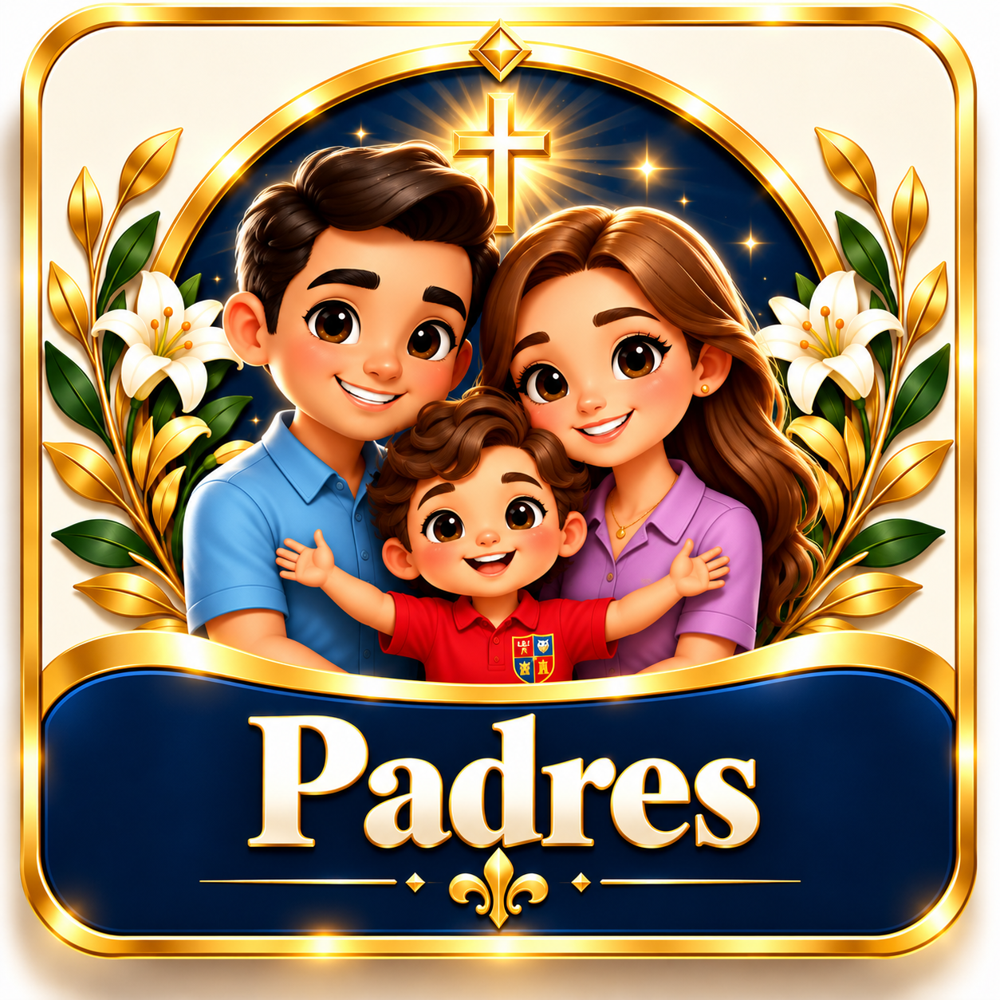

```html
<!DOCTYPE html>
<html lang="es">
<head>
<meta charset="UTF-8">
<meta name="viewport" content="width=device-width, initial-scale=1">
<meta name="theme-color" content="#071d49">
<title>Camino hacia Jesús 2026 | Colegio La Salle del Sur</title>

<style>
*{box-sizing:border-box}

html,body{
  margin:0;
  width:100%;
  min-height:100%;
}

body{
  min-height:100vh;
  min-height:100dvh;
  background:#071d49;
  font-family:Georgia,"Times New Roman",serif;
  overflow-x:hidden;
}

/* PORTADA DE FONDO */
.fondo{
  position:fixed;
  inset:0;
  z-index:-1;
  background-image:url("./assets/PORTAL_CATEQUESIS.png");
  background-position:center;
  background-size:cover;
  background-repeat:no-repeat;
}

/* DISTRIBUCIÓN GENERAL */
.contenedor{
  width:100%;
  min-height:100vh;
  min-height:100dvh;
  display:grid;
  grid-template-columns:150px minmax(0,1fr);
  gap:12px;
  padding:10px;
  align-items:center;
}

/* CINCO BOTONES A LA IZQUIERDA */
.botones{
  grid-column:1;
  width:100%;
  display:flex;
  flex-direction:column;
  justify-content:center;
  align-items:stretch;
  gap:8px;
  margin:0;
  padding:0;
}

.boton{
  display:block;
  width:100%;
  aspect-ratio:1 / 1;
  padding:2px;
  overflow:hidden;
  border:2px solid #e8b947;
  border-radius:10px;
  background:#071d49;
  box-shadow:0 2px 7px #0006;
  transition:transform .18s ease,box-shadow .18s ease;
}

.boton img{
  display:block;
  width:100%;
  height:100%;
  object-fit:contain;
}

.boton:hover{
  transform:scale(1.025);
  box-shadow:0 0 12px #e8b94799;
}

.boton:focus-visible{
  outline:2px solid white;
  outline-offset:2px;
}

/* ESPACIO RESERVADO PARA LA PORTADA */
.portada{
  grid-column:2;
  min-width:0;
  min-height:1px;
}

/* TABLET */
@media(min-width:601px) and (max-width:900px){
  .contenedor{
    grid-template-columns:120px minmax(0,1fr);
    gap:10px;
    padding:8px;
  }

  .botones{gap:6px}
  .boton{border-radius:8px}
}

/* CELULAR: CINCO BOTONES EN COLUMNA */
@media(max-width:600px){
  .contenedor{
    grid-template-columns:88px minmax(0,1fr);
    gap:8px;
    padding:6px;
  }

  .botones{gap:6px}
  .boton{
    padding:1px;
    border-width:1px;
    border-radius:7px;
  }
}

@media(max-width:380px){
  .contenedor{
    grid-template-columns:76px minmax(0,1fr);
    gap:6px;
    padding:5px;
  }

  .botones{gap:5px}
}

@media(prefers-reduced-motion:reduce){
  .boton{transition:none}
}
</style>
</head>

<body>
<div class="fondo" aria-hidden="true"></div>

<main class="contenedor">

  <nav class="botones" aria-label="Portales principales">

    <a class="boton" href="./catequizandos.html"
       aria-label="Catequizandos">
      
    </a>

    <a class="boton" href="./misses.html"
       aria-label="Catequistas">
      
    </a>

    <a class="boton" href="./supervisores.html"
       aria-label="Coordinador Parroquial">
      
    </a>

    <a class="boton" href="./padres.html"
       aria-label="Padres">
      
    </a>

    <a class="boton" href="./programacion.html"
       aria-label="Nuestra Programación">
      
    </a>

  </nav>

  <section class="portada" aria-label="Portada de catequesis"></section>

</main>
</body>
</html>
```
